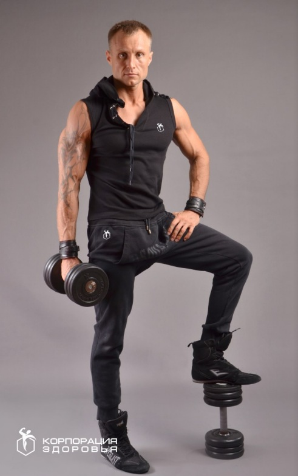
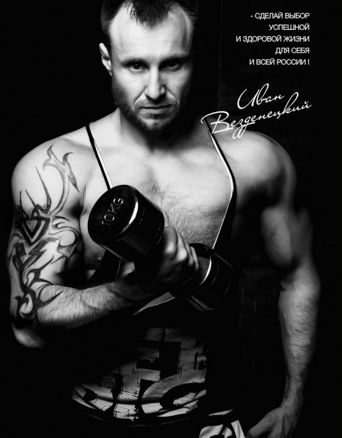
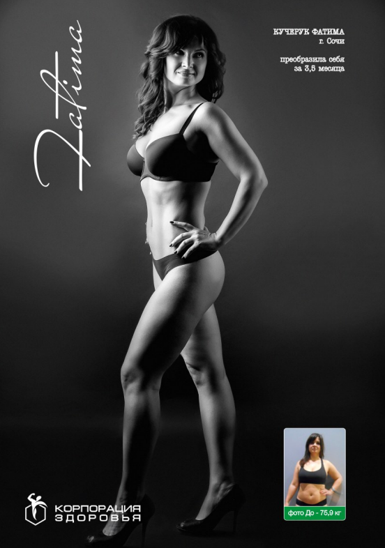
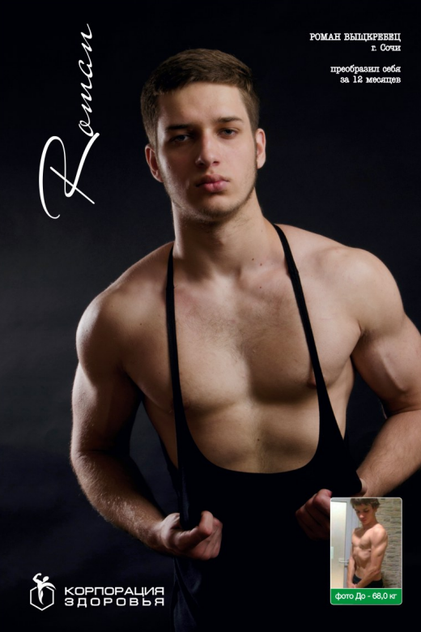
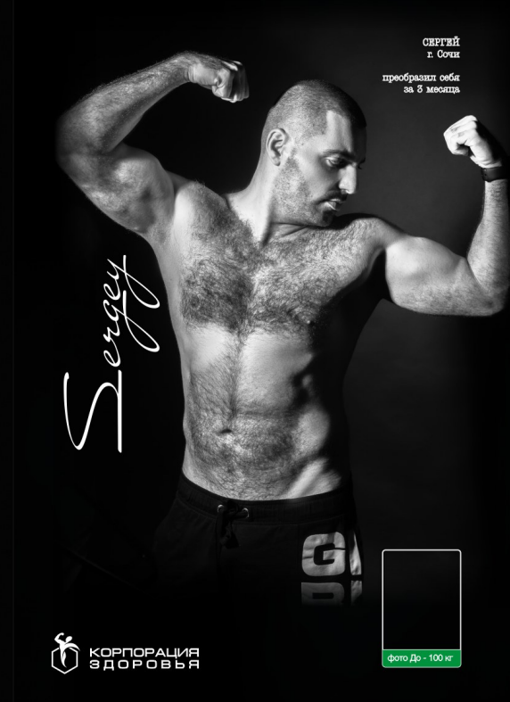
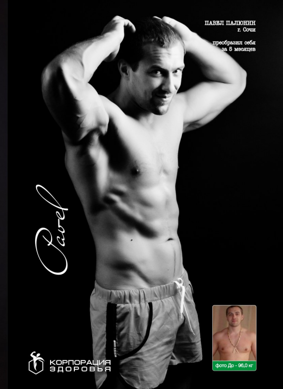
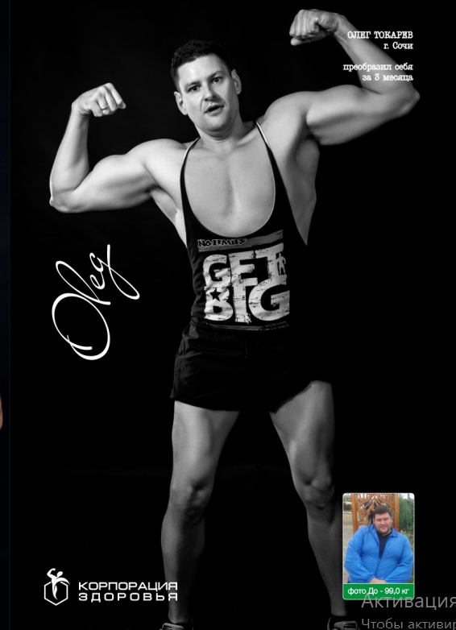
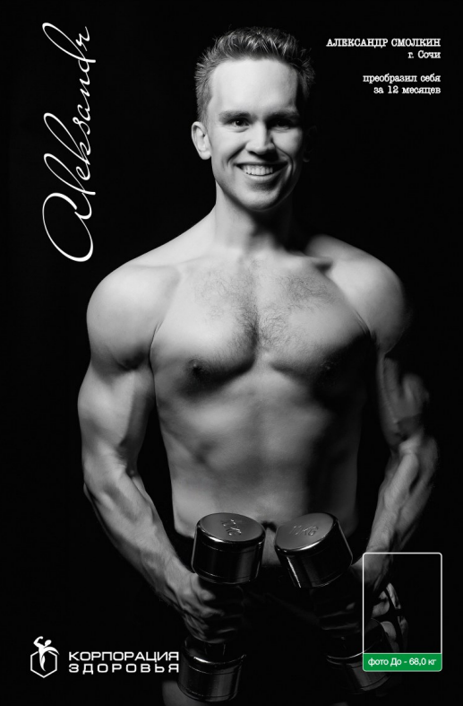
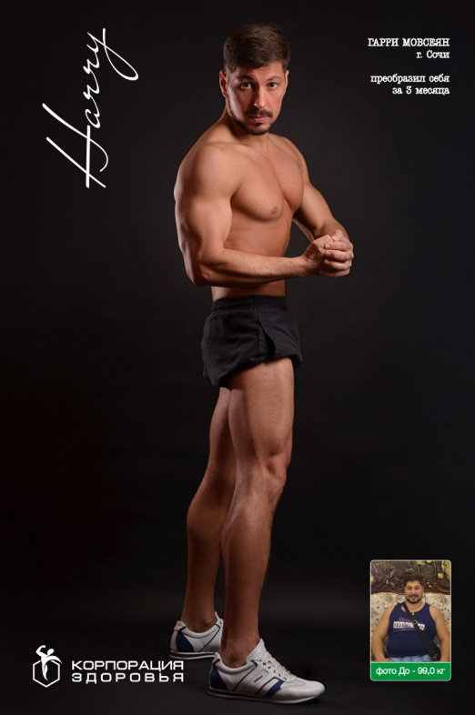

Восемь самостоятельных шагов по системе Ивана Везденецкого. Каждый закрывает свою грань — тело, дом, питание, ментальное здоровье. Правильного порядка не существует, есть тот, что откликается именно сейчас.
линейный путь подходит не всем — у каждого разная точка входа
жёсткая программа с фиксированным стартом отпугивает раньше, чем начинается
результат в одной сфере жизни не должен ждать очереди остальных
мотивация выше, когда шаг выбран сам, а не назначен по расписанию
восемь шагов рано или поздно пересекаются сами — принуждать не нужно

Кто-то входит через тело, кто-то через дом, кто-то через ментальное здоровье. Каждый шаг ведёт к одному итогу — целостной жизни, просто с разных сторон.
Есть та, что откликается именно сейчас. Начните с шага, который сегодня кажется самым нужным — система выстроена так, что рано или поздно они соединятся сами.
Не монтажные фотографии из стоков, а ученики системы Везденецкого. Разные стартовые точки, разные сроки — объединяет одно: результат измерим и задокументирован.








Восемь направлений системы Ивана Везденецкого. Открытые уже принимают участников — остальные в разработке, но их суть и формат уже определены.
Инфраструктура для регулярных тренировок и сообщества — среда, в которой закрепляется результат шага «Тренировки».
Персональный тренинг по системе, которую Иван сначала построил на себе. Не абстрактный ЗОЖ, а измеримый результат в конкретный срок.
Экобар — программа сбалансированного питания на каждый день. Продолжение тренировочного результата в быту, а не отдельная диета.
Фирменная спортивная линейка «Корпорация спорта». Монетизация идентичности: «я — человек, который прошёл систему».
Поход в горы, выездные бани, фитнес-пати — командный формат для бизнес-аудитории. Результат подтверждается в кругу равных.
Эко-тур «Путь к новой жизни» — комплексное оздоровление через климатотерапию, питание и финальный поход в горы. В перспективе — марафон «Весь мир за 5 лет».
Оздоровительный комплекс в экологически чистом районе — среда обитания, соответствующая новому образу жизни.
Психологические и мотивационные тренинги — работа с причиной, а не только со следствием.
Это не этапы, которые обязательно проходить по порядку, а ориентир: как меняется результат, если оставаться в системе дольше.
Общее укрепление, снижение веса до 10 кг
Анатомическая норма, снижение веса до 25 кг
Нормализация обмена веществ на клеточном уровне
Работа на тонких материях, ЗОЖ как привычка
Полная реконструкция тела и личности
Не нужно ждать «подходящего момента» пройти все восемь по порядку. Выберите один шаг — остальные найдут вас сами, когда будет нужно.